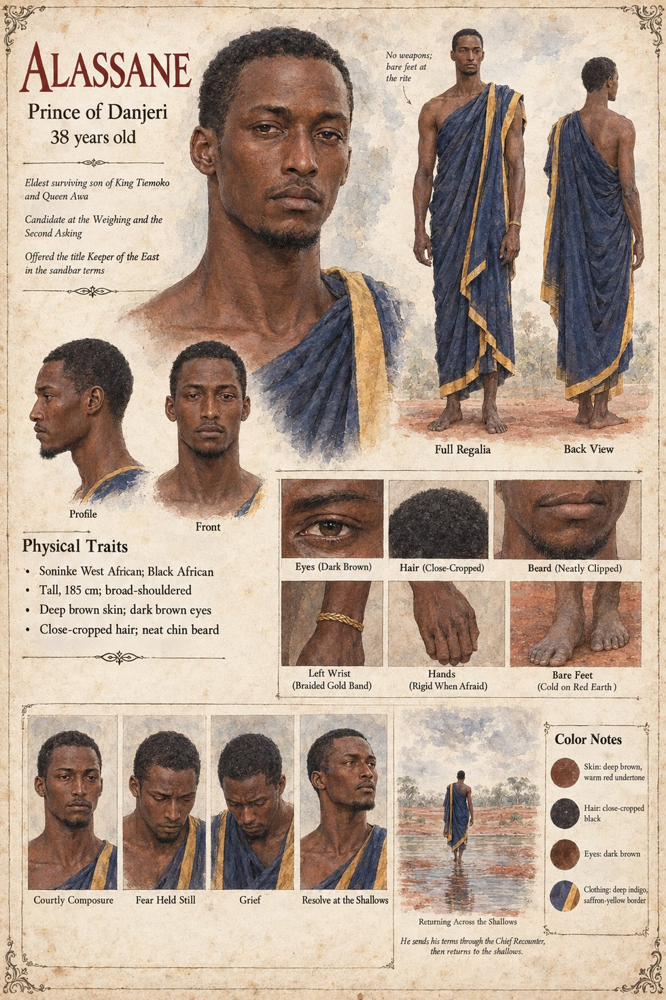

Alassane
Elder prince of Danjeri, Awa's son · candidate at the Weighing and the Second Asking · offered the title Keeper of the East · 38 years old
Awa's son, born in the ninth winter after Damba's death: quick, proud, a little afraid of the river he would someday be expected to bargain with, who grows into a man who wants, more than the throne itself, to be the person everyone has always said he would be. He visits the kennel yard perhaps four times in his whole boyhood, on the arm of a nurse, is greeted by the dog with the same joyful sandal-bearing enthusiasm as anyone, offers it a strip of dried fish, has it taken from him politely and watches the dog wander back toward Sekou's foot. He feels, without being able to say why, faintly and permanently outranked by an animal, and puts it out of his mind.
At the Weighing he stands barefoot at the northern end of the Ancestor Court, tall and immaculate in a wrapper dyed for the day, wearing the calm of a man who has been rehearsing it since childhood, and when the dog crosses the court and sits on his rival's foot he remembers, with a clarity that turns his stomach, a strip of dried fish and a courteous animal walking away. An hour before dawn he comes to his mother's chamber, for the first time since he was eight, and asks whether it is true that the ancestors have chosen. I do not want to fight, he says, to the floor, the truest thing he would say that year. At the Second Asking he holds out his hand, more afraid than he has ever been, and it shows only in the stillness of his fingers; the dog sniffs it, with the perfect manners it shows to everyone from grain-clerks to kings, and trots the twenty-seven remaining paces up the lane to Sekou's left foot. He leaves Kambaso with his mother, her steward and four of the Sitting Elders, and the country divides along the line her dowry always drew.
On the sandbar, in the last week of Jorren in the third winter of the war, he asks for the whole of the east as a second crown; Sekou answers by offering it in trust, as a keepership, which was not the same word. In the ninth hour he puts the term he came to put, in six words that the Chief Recounter Fode carries exactly: that his mother should not be tried. Sekou says it is agreed. Alassane receives it with his eyes shut, and when the Recounter stands between the tents with nothing left to carry he asks, not as a prince but as a man staying on after the business is done, Is it warm, where it sleeps?, and is told that it sleeps on his brother's feet. He is very nearly a happy man on the way back, crossing at the shallows at dusk with a single guard, and he was, for the length of that crossing, at peace. Sory is waiting on the far bank. Alassane dies in the shallows of the river he had feared, and is brought to his mother's tent on a door.
The manuscript gives his height as tall, his immaculate dress and his hands that go still when he is afraid; the rest is invented. The sheet's age of 38, 6 ft 1 in (185 cm) broad-shouldered frame, deep brown skin, close-cropped hair, neat chin beard, braided gold wristband and deep-indigo wrapper with a saffron-yellow border are its own, as are its panels Courtly Composure, Fear Held Still, Grief and Resolve at the Shallows and its scene Returning Across the Shallows, captioned He sends his terms through the Chief Recounter, then returns to the shallows. Its title strip calls him the eldest surviving son of Tiemoko and Awa, which implies sons the manuscript does not mention. The manuscript's Chapter Six has the fish remembered after thirty-one years; Chapter Ten has it remembered after thirty.
“I do not want to fight”